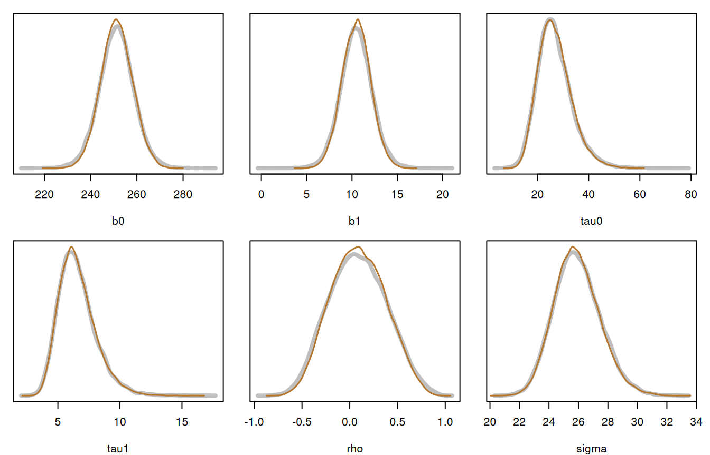
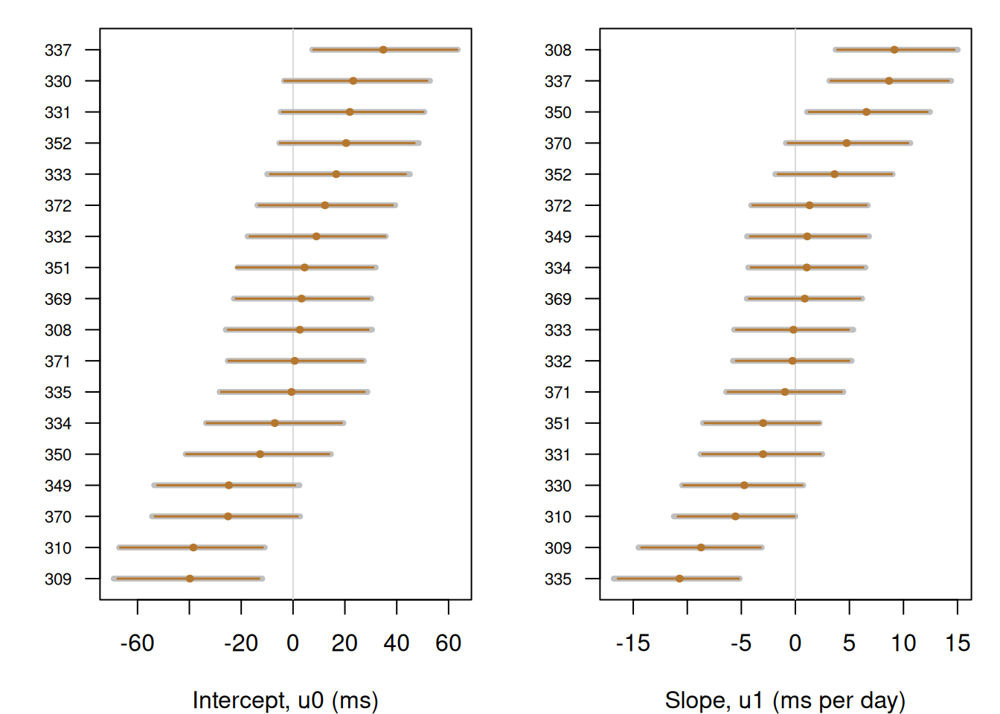
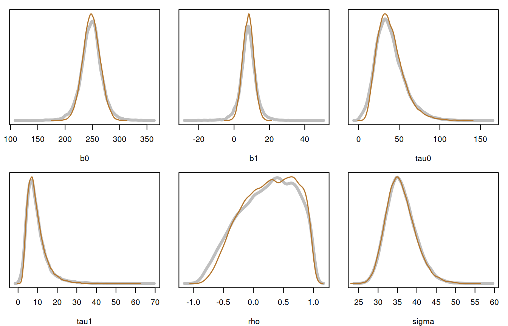

library(inlavanilla)
data(sleepstudy, package = "lme4")inla_vanilla() knows nothing about levels or clusters: it sees one log-posterior and a vector of parameters. A multilevel model fits in that mould when the random effects are integrated out inside logpost, so that the parameters are only the fixed effects and the variance components. For a linear mixed model the integral is in closed form.
This article fits a model with correlated random intercepts and slopes, draws the random effects from the fit afterwards, and compares both with brms (Bürkner, 2017), which samples the full model, random effects included, with Stan.
The model
The sleepstudy data (Belenky et al., 2003; Bates et al., 2015) record the reaction times \(y_{ij}\) of 18 subjects over 10 days of sleep deprivation. Each subject \(j\) has their own intercept and slope:
\[ y_{ij} = \beta_0 + u_{0j} + (\beta_1 + u_{1j})\,\text{day}_{ij} + \epsilon_{ij}, \qquad \begin{pmatrix} u_{0j} \\ u_{1j} \end{pmatrix} \sim N(0, G), \qquad \epsilon_{ij} \sim N(0, \sigma^2), \]
where \(G\) has standard deviations \(\tau_0\) and \(\tau_1\) and correlation \(\rho\). Integrating out \(u_j\) leaves, for each subject’s vector of reaction times,
\[ y_j \sim N\left(X_j \beta,\; X_j G X_j^\top + \sigma^2 I\right), \]
with \(X_j = [1, \text{day}_j]\). The priors are \(\beta_0, \beta_1 \sim N(0, 500^2)\), half-normal \(N(0, 50^2)\) on \(\tau_0\), \(\tau_1\) and \(\sigma\), and a uniform prior on \(\rho\).
The log-posterior
The standard deviations are on the log scale and \(\rho\) on the atanh scale, so each prior gets the log-Jacobian of its transform: \(\log \tau\) for a standard deviation, and \(\log(1 - \rho^2)\) for the correlation.
logpost <- function(theta, ys, xs) {
b <- c(theta[["b0"]], theta[["b1"]])
tau <- exp(c(theta[["log_tau0"]], theta[["log_tau1"]]))
rho <- tanh(theta[["atanh_rho"]])
sigma <- exp(theta[["log_sigma"]])
g <- diag(tau^2)
g[1, 2] <- g[2, 1] <- rho * tau[1] * tau[2]
# Marginal log-likelihood, one subject at a time
loglik <- 0
for (j in seq_along(ys)) {
x <- xs[[j]]
r <- chol(x %*% g %*% t(x) + diag(sigma^2, nrow(x)))
z <- backsolve(r, ys[[j]] - x %*% b, transpose = TRUE)
loglik <- loglik - sum(log(diag(r))) - sum(z^2) / 2 -
nrow(x) / 2 * log(2 * pi)
}
# Half-normal prior on a standard deviation, with the log-Jacobian
lp_sd <- function(s) dnorm(s, 0, 50, log = TRUE) + log(2) + log(s)
loglik +
sum(dnorm(b, 0, 500, log = TRUE)) +
sum(lp_sd(tau)) +
lp_sd(sigma) +
log(1 / 2) + log(1 - rho^2)
}The data go in as one response vector and one design matrix per subject:
The fit
init <- c(
b0 = 250, b1 = 10, log_tau0 = log(20), log_tau1 = log(5),
atanh_rho = 0, log_sigma = log(25)
)
fit <- inla_vanilla(logpost, init, ys = ys, xs = xs)
#> ✔ Found the posterior mode in 20 iterations [75ms]
#> ✔ VB mean correction, max shift 0.3σ [91ms]
#> ✔ Fitted 6 skew-normal marginals [88ms]
fit
#> ── INLAvanilla ───────────────────────────────────────── Skew-normal + VB ──
#>
#> Log marginal likelihood: -894.67 · Converged in 20 iterations (269ms)
#>
#> Mean SD 2.5% 50% 97.5% Mode
#> 1 b0 251.35 6.84 237.93 251.35 264.75 251.36
#> 2 b1 10.47 1.56 7.41 10.47 13.52 10.47
#> 3 log_tau0 3.263 0.239 2.787 3.266 3.724 3.271
#> 4 log_tau1 1.860 0.219 1.444 1.855 2.303 1.845
#> 5 atanh_rho 0.102 0.313 -0.464 0.084 0.767 0.046
#> 6 log_sigma 3.2520 0.0593 3.1390 3.2509 3.3715 3.2486
#>
#> ! 1 check flagged by `summary()`.The marginals are on the unconstrained scale. Draws give the standard deviations and the correlation on their natural scale:
Checking against brms
The same model in brms, with the same priors:
library(brms)
fit_brms <- brm(
Reaction ~ 0 + Intercept + Days + (Days | Subject),
data = sleepstudy,
prior = c(
prior(normal(0, 500), class = b),
prior(normal(0, 50), class = sd),
prior(normal(0, 50), class = sigma),
prior(lkj(1), class = cor)
),
chains = 4, iter = 7500, warmup = 2500,
control = list(adapt_delta = 0.999)
)Its 20,000 draws, with no divergent transitions, were summarised ahead of time (lab/multilevel-article.R in the package source), so this page does not need Stan to build:
ref <- readRDS("multilevel-brms.rds")
compare <- function(draws, ref) {
data.frame(
brms_mean = ref$summary$mean,
vanilla_mean = colMeans(draws),
brms_sd = ref$summary$sd,
vanilla_sd = apply(draws, 2, sd)
)
}
round(compare(draws, ref$subjects_18), 3)
#> brms_mean vanilla_mean brms_sd vanilla_sd
#> b0 251.194 251.311 7.491 6.855
#> b1 10.478 10.471 1.726 1.565
#> tau0 26.791 26.851 6.796 6.493
#> tau1 6.580 6.582 1.542 1.480
#> rho 0.088 0.091 0.300 0.284
#> sigma 25.927 25.905 1.576 1.539The means agree to a small fraction of a standard deviation. The variance components and \(\rho\) have about the right spread too. The fixed effects are about 10% too narrow, for a reason the last section explains. The densities, brms in grey:
plot_compare <- function(draws, ref) {
op <- par(mfrow = c(2, 3), mar = c(4, 1, 1, 1))
on.exit(par(op))
for (p in colnames(draws)) {
d_ref <- ref$density[[p]]
d_iv <- density(draws[, p], n = 256)
plot(
d_ref$x, d_ref$y, type = "l", lwd = 4, col = "grey75",
ylim = c(0, max(d_ref$y, d_iv$y)), xlab = p, ylab = "", yaxt = "n"
)
lines(d_iv, lwd = 1.5, col = "#B5772E")
}
}
plot_compare(draws, ref$subjects_18)
inla_vanilla() took a fraction of a second. brms takes seconds to sample, after about a minute compiling the model.
The random effects
The fit has no random effects, because logpost integrated them out, but draws bring them back. Given the parameters \(\theta\), each subject’s random effects are Gaussian:
\[ u_j \mid y, \theta \sim N(m_j, V_j), \qquad V_j = \left(G^{-1} + X_j^\top X_j / \sigma^2\right)^{-1}, \qquad m_j = V_j X_j^\top (y_j - X_j \beta) / \sigma^2. \]
So a draw of \(\theta\) from the fit, followed by a draw of each \(u_j\) given \(\theta\), is a draw from the posterior of the random effects. sampling() passes ys and xs on to fun:
draw_ranef <- function(theta, ys, xs) {
b <- c(theta[["b0"]], theta[["b1"]])
tau <- exp(c(theta[["log_tau0"]], theta[["log_tau1"]]))
rho <- tanh(theta[["atanh_rho"]])
sigma <- exp(theta[["log_sigma"]])
g <- diag(tau^2)
g[1, 2] <- g[2, 1] <- rho * tau[1] * tau[2]
g_inv <- solve(g)
# One draw of (u0, u1) for each subject, given theta
u <- vapply(
names(ys),
function(j) {
x <- xs[[j]]
v <- solve(g_inv + crossprod(x) / sigma^2)
m <- v %*% crossprod(x, ys[[j]] - x %*% b) / sigma^2
drop(m + t(chol(v)) %*% rnorm(2))
},
numeric(2)
)
c(u0 = u[1, ], u1 = u[2, ])
}
set.seed(1)
u_draws <- sampling(fit, nsamp = 20000, fun = draw_ranef, ys = ys, xs = xs)A caterpillar plot shows each subject’s posterior mean and 95% credible interval, sorted by the mean, with brms in grey:
plot_caterpillar <- function(u_draws, ref) {
op <- par(mfrow = c(1, 2), mar = c(4, 3.5, 1, 1))
on.exit(par(op))
xlabs <- c(u0 = "Intercept, u0 (ms)", u1 = "Slope, u1 (ms per day)")
for (k in names(xlabs)) {
d <- u_draws[, startsWith(colnames(u_draws), k)]
est <- cbind(colMeans(d), t(apply(d, 2, quantile, c(0.025, 0.975))))
est_ref <- as.matrix(ref$ranef[[k]][, c("mean", "2.5%", "97.5%")])
o <- order(est[, 1])
y <- seq_along(o)
plot(
est[o, 1], y, type = "n", xlim = range(est, est_ref),
xlab = xlabs[[k]], ylab = "", yaxt = "n"
)
axis(2, at = y, labels = rownames(est_ref)[o], las = 1, cex.axis = 0.7)
abline(v = 0, col = "grey85")
segments(est_ref[o, 2], y, est_ref[o, 3], y, lwd = 4, col = "grey75")
segments(est[o, 2], y, est[o, 3], y, lwd = 1.5, col = "#B5772E")
points(est[o, 1], y, pch = 19, cex = 0.6, col = "#B5772E")
}
}
plot_caterpillar(u_draws, ref$subjects_18)
The means agree with brms to within 1% of the interval’s width, and the intervals are at most 5% narrower.
With fewer subjects
With only the first six subjects, the variance components are poorly determined:
keep <- 1:6
fit_6 <- inla_vanilla(logpost, init, ys = ys[keep], xs = xs[keep])
#> ✔ Found the posterior mode in 20 iterations [26ms]
#> ✔ VB mean correction, max shift 0.42σ [44ms]
#> ✔ Fitted 6 skew-normal marginals [51ms]
set.seed(1)
draws_6 <- sampling(fit_6, nsamp = 20000, fun = natural)
round(compare(draws_6, ref$subjects_6), 3)
#> brms_mean vanilla_mean brms_sd vanilla_sd
#> b0 248.014 248.294 19.398 15.581
#> b1 7.963 8.002 4.650 3.115
#> tau0 38.905 39.368 17.676 16.271
#> tau1 9.282 9.273 5.384 4.803
#> rho 0.230 0.262 0.452 0.426
#> sigma 35.939 35.844 3.726 3.716The variance components still match, but the fixed effects are now well too narrow: the standard deviation of \(\beta_1\) is a third too small. Given the variance components, \(\beta\) is Gaussian, but its marginal mixes those Gaussians over the uncertain \(\tau_0\), \(\tau_1\) and \(\rho\), which gives it heavier tails than a skew-normal has. summary() flags this as a large ridge bend:
summary(fit_6)
#> ── INLAvanilla summary ───────────────────────────────── Skew-normal + VB ──
#>
#> Log marginal likelihood: -322.764 · Converged in 20 iterations (124ms)
#> Laplace -322.994 + VB term 0.23
#> 937 logpost calls: mode 26ms, VB 44ms, marginals 52ms
#>
#> ── Posterior marginals ──
#>
#> Mean SD 2.5% 50% 97.5% Mode
#> 1 b0 248.4 15.6 217.8 248.4 278.8 248.5
#> 2 b1 8.00 3.10 1.92 8.00 14.08 8.00
#> 3 log_tau0 3.592 0.414 2.728 3.610 4.355 3.647
#> 4 log_tau1 2.111 0.477 1.200 2.102 3.070 2.085
#> 5 atanh_rho 0.360 0.595 -0.626 0.293 1.692 0.142
#> 6 log_sigma 3.573 0.102 3.381 3.570 3.783 3.563
#>
#> ── Diagnostics ──
#>
#> VB shift NMAD Unscanned Ridge bend Mean gap
#> 1 b0 -0.010 0.00028 0.000066 0.63 0.0026
#> 2 b1 0.017 0.000012 0.000063 0.76 -0.019
#> 3 log_tau0 0.23 0.037 0.00022 0.034 0.073
#> 4 log_tau1 0.42 0.050 0.0023 0.043 0.13
#> 5 atanh_rho 0.23 0.041 0.0048 1.1 0.18
#> 6 log_sigma 0.26 0.0061 0.00043 0.000085 -0.0014
#>
#> ✔ Mode found in 20 iterations (Newton step 9e-07σ).
#> ✔ Hessian condition number 1.8, in SD units.
#> ✔ VB correction settled in 6 iterations: max shift 0.42σ.
#> ✔ Skew-normal fits: max NMAD 0.050, unscanned mass 0.0048.
#> ! Ridge bend > 0.25 for `atanh_rho` (1.06), `b1` (0.76), `b0` (0.63): the
#> marginal SD may be >10% too small.
#> ! Mean gap > 0.1σ for `atanh_rho` (0.18), `log_tau1` (0.13): the posterior
#> is far from Gaussian there, and either mean may be off.
plot_compare(draws_6, ref$subjects_6)
The approximation holds up well when the data identify the variance components, and says so when they do not.
References
Bates, D., Mächler, M., Bolker, B., & Walker, S. (2015). Fitting linear mixed-effects models using lme4. Journal of Statistical Software, 67(1), 1–48. https://doi.org/10.18637/jss.v067.i01
Belenky, G., Wesensten, N. J., Thorne, D. R., Thomas, M. L., Sing, H. C., Redmond, D. P., Russo, M. B., & Balkin, T. J. (2003). Patterns of performance degradation and restoration during sleep restriction and subsequent recovery: A sleep dose-response study. Journal of Sleep Research, 12(1), 1–12. https://doi.org/10.1046/j.1365-2869.2003.00337.x
Bürkner, P.-C. (2017). brms: An R package for Bayesian multilevel models using Stan. Journal of Statistical Software, 80(1), 1–28. https://doi.org/10.18637/jss.v080.i01